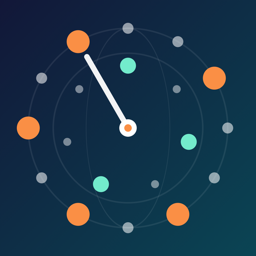

RhythmAtlas
What does RhythmAtlas do?
RhythmAtlas is a metronome built around rhythm cycles: 23 cycles from six traditions, each shown with its beat numbers, accents, strokes and markers and its name in its own script. It plays them with steady, sample-accurate timing and adds practice tools for working on a cycle. The core is free; one optional one-time purchase unlocks the rest. There is no subscription, account or advertising.
The rhythm cycles
- Afro-Cuban clave: son and rumba clave, 3-2 and 2-3.
- Brazil: samba (surdo and ganzá) and bossa nova.
- Flamenco compás: soleá, bulería, alegrías and seguiriya with the 12-count accents.
- Hindustani tala: teentaal, rupak, jhaptaal, keherwa and dadra, with theka bols and sam (X), tali (2, 3) and khali (0).
- Arabic iqa: maqsum, baladi, saidi and malfuf, with dum and tak.
- Balkan odd meters: rachenitsa 7/8, lesnoto 7/8, daychovo 9/8 and kopanitsa 11/8.
Patterns are basic teaching forms. Teachers and regions vary; when your teacher's version differs, follow your teacher.
How to use it
- Atlas: pick a cycle. The dial shows every step, sized by accent, with the playhead moving around it; the grid underneath shows counts, strokes and markers.
- Tempo: use − / +, the slider or Tap tempo. Tempo is counted the way each tradition counts it: quarter notes, eighth notes (Balkan), flamenco counts or tala matras.
- Guide pulse: adds a soft click on each beat under the pattern.
- Practice tools: Tempo ladder speeds up by a set amount every few cycles until your target tempo. Gap click leaves silent cycles so you keep the time inside. Polyrhythm plays 2–9 notes against 2–9 beats on two rings.
- Setlists: tap Add to setlist to save a cycle with its tempo and practice settings; open the Setlists tab to play, reorder, rename or delete.
- Settings: volume, Play along with other apps (lets music from other apps keep playing; lock-screen controls are not shown in this mode), Restore purchases.
Sound and background playback
- Every stroke has the same loudness at any tempo. All sounds are synthesized on the device; they suggest each instrument for practice and are not recordings.
- RhythmAtlas keeps playing when you lock the screen and shows play and pause on the lock screen. A phone call or another app taking the audio stops playback.
Free and Full Atlas
- Free: the click metronome (1–12 beats, 1–4 clicks per beat) and one cycle from every tradition: son clave 3-2, samba, soleá, teentaal, maqsum and rachenitsa.
- Full Atlas (one-time, non-consumable in-app purchase): every cycle, polyrhythms, the tempo ladder and gap click. No subscription.
- Setlists you saved always keep working, with or without the purchase.
- To buy, tap a locked cycle or Settings › Unlock Full Atlas. The price shown is the App Store's price for your country.
- Restore: on the purchase screen or Settings › Restore purchases, signed in with the same Apple Account. Refunds are handled by Apple at reportaproblem.apple.com.
Good to know
- Setlists and settings are saved on this device only. Deleting the app deletes them.
- iPhone in portrait; iPad in any orientation. English, Korean, Japanese, Spanish, Brazilian Portuguese, French, German, Italian, Hindi and Arabic.
Contact
한국어
RhythmAtlas는 세계 여러 전통의 리듬 주기로 연습하는 메트로놈입니다. 아프로쿠바 클라베, 브라질(삼바·보사노바), 플라멩코 콤파스, 힌두스타니 탈라, 아랍 이카, 발칸 변박자까지 6개 전통의 리듬 주기 23개를 박 번호, 강세, 주법, 표시와 함께 보여 주고, 리듬 이름은 원어 표기와 함께 적었습니다. 기본 기능은 무료이고 선택형 한 번 구입으로 나머지가 열립니다. 구독·계정·광고는 없습니다.
- 아틀라스: 리듬 주기를 고르면 다이얼에 모든 스텝이 강세 크기대로 그려지고 재생 위치가 원을 따라 돕니다. 아래 칸에서 카운트, 볼·둠/탁, 표시를 볼 수 있습니다.
- 템포: −/+, 슬라이더, 탭 템포로 바꿉니다. 템포는 전통마다 세는 단위(4분음표, 발칸은 8분음표, 플라멩코 카운트, 탈라의 마트라)로 맞췄습니다.
- 연습 도구: 템포 사다리는 몇 주기마다 저절로 빨라져 목표 템포까지 올라갑니다. 갭 클릭은 소리 없는 주기 동안 속으로 박을 지키게 합니다. 폴리리듬은 2–9 대 2–9를 두 개의 원으로 들려줍니다.
- 세트리스트: ‘세트리스트에 추가’로 리듬을 템포·연습 설정과 함께 저장합니다. 저장한 세트리스트는 구입 여부와 관계없이 언제나 그대로 쓸 수 있습니다.
- 소리: 어떤 템포에서도 한 타의 크기가 같습니다. 모든 소리는 기기에서 합성하며 녹음이 아닙니다. 화면을 잠가도 계속 재생되고 잠금 화면에서 재생·일시정지할 수 있습니다.
- 무료: 클릭 메트로놈과 전통마다 리듬 하나(손 클라베 3-2, 삼바, 솔레아, 틴탈, 막숨, 라체니차).
- 풀 아틀라스(한 번 구입, 비소모성): 모든 리듬 주기, 폴리리듬, 템포 사다리, 갭 클릭. 구독 없음. 복원은 구입 화면이나 설정 › ‘구매 복원’. 환불은 Apple(reportaproblem.apple.com)에서 처리합니다.
- 패턴은 처음 배우는 기본형입니다. 선생님과 지역마다 다를 수 있으니, 다르면 선생님의 형태를 따르세요. 세트리스트와 설정은 이 기기에만 저장되고 앱을 지우면 함께 지워집니다.